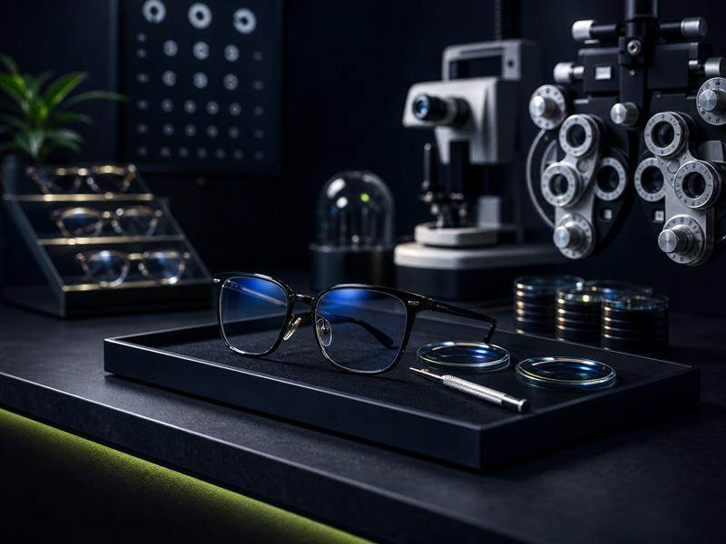

Небольшая независимая оптика в Санкт-Петербурге конкурировала с федеральными сетями. Через правильную упаковку карточек на Яндекс и Google Картах мы вывели её в видимую зону выдачи и обеспечили стабильный поток клиентов.

Оптика работала давно и имела хорошую репутацию среди постоянных клиентов. Но привлекать новых становилось всё сложнее: по запросам «оптика рядом», «купить очки», «проверка зрения» в топе карт стабильно стояли крупные сети — «Очкарик», «Айкрафт» и другие.
Карточки оптики на Яндекс Картах и в Google существовали, но были слабо заполнены. Отсутствовал каталог товаров, не были прописаны услуги, фотографии устарели, отзывов было мало.
Независимая оптика может конкурировать с сетями в локальной выдаче — если карточка заполнена лучше. Алгоритм карт не знает, «большой» бизнес или «маленький». Он ранжирует по качеству карточки и активности.
Анализ конкурентов показал: федеральные сети в карточках часто имеют устаревшие данные и редко обновляют контент. Это открывало окно возможностей — небольшой бизнес с живой и актуальной карточкой мог их обогнать.
Категории и описание. Правильно выбрали основную категорию «Оптика» и добавили дополнительные: «Офтальмологическая клиника», «Магазин очков». Написали описание с естественным вхождением ключевых запросов района.
Каталог товаров. Загрузили структурированный каталог: раздел «Оправы» — мужские, женские, детские; раздел «Линзы» — однодневные, двухнедельные, ежемесячные; раздел «Солнечные очки». Каждая позиция с ценой и коротким описанием.
Услуги. Прописали полный перечень: проверка зрения (бесплатная), подбор контактных линз, ремонт оправ, замена линз. Указали сроки и стоимость — это ключевой сигнал доверия для пользователя, который видит карточку впервые.
Фотографии. Организовали профессиональную съёмку торгового зала, витрин, кабинета офтальмолога и зоны приёма. Тёплый, живой контент показывает атмосферу магазина и повышает конверсию в звонок.
Получили новые отзывы от реальных клиентов с упоминанием услуг и мастеров. Ответили на все имеющиеся отзывы, в том числе на негативные — с конструктивными и профессиональными ответами.
Оптика вышла в видимую зону локальной выдачи и начала конкурировать с сетевыми игроками. Карточки полностью заполнены, каталог загружен, рейтинг выстроен. Новые клиенты находят оптику по запросам «рядом» и приходят уже «прогретыми» — изучив фото, услуги и отзывы.
Оптика — это не спонтанная покупка. Человек изучает варианты, сравнивает. Карточки в Яндекс и Google — это первая точка контакта, где принимается решение «зайти или нет». Богатая карточка с каталогом, услугами и живыми фото снимает барьер недоверия ещё до визита.
Работа с картами для оптики — это не реклама, а базовый инструмент присутствия. Без него бизнес просто невидим для части своей аудитории.
Упакуем карточку вашей оптики и выведем в топ локальной выдачи.